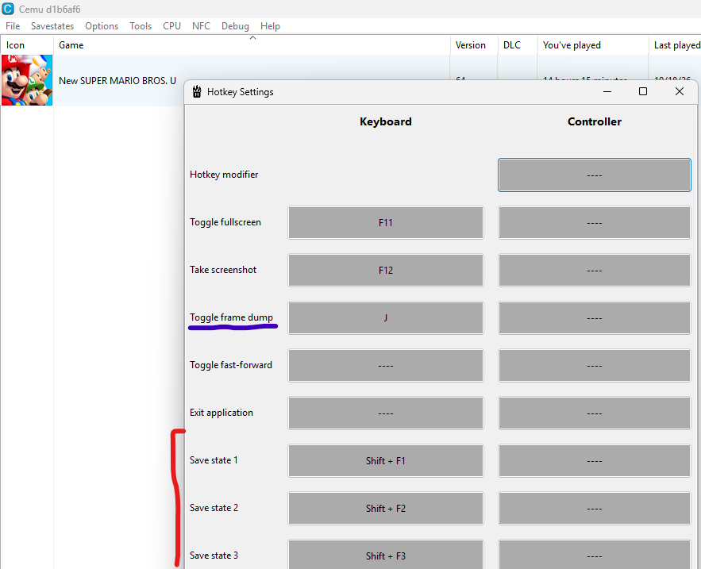

What's new
- Frame dumping
- Dump frames straight from the emulator with a single hotkey.
- Savestates
- Save and load the state of your game at any time. Saving and loading both work.
Everything else is the Cemu you already know.
Limitations
- Audio dumping is not available yet. It is planned for a future release.
- Do not use savestates on the title screen of Wii U games. Some games, such as NSMBU, use extra packs to fix crashes on the title screen, and these packs are incompatible with savestates. Everywhere else, savestates work perfectly.
- Loading a state takes a while. With your OS set to its best graphics performance, loading a state takes 20–30 seconds on average. With the lowest graphics performance, it takes more than 2 minutes.
Set up your hotkeys
You can bind keys to toggle the new features. In Cemulador, open Options → Hotkey Settings. Frame dump and the savestate slots are in the list, next to the usual Cemu hotkeys.

Download
Each button starts the download of a ZIP file.
Have fun!
This project took me a lot of effort to build. I hope you enjoy it.
TheSharpEspada